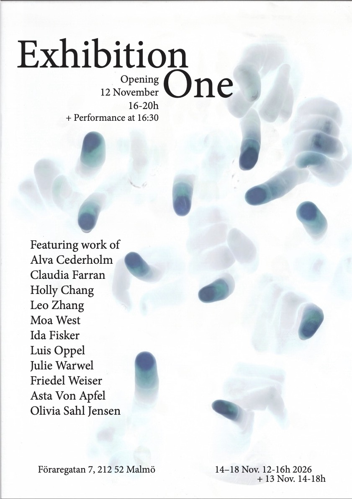

Opening Thursday November 12, 16:00 - 20:00
16:30 performance
Gallery Hours
Friday November 13, 14:00-18:00
Saturday November 14, 12:00-16:00
Sunday November 15, 12:00-16:00
Monday November 16, 12:00-16:00
Tuesday November 17, 12:00-16:00
Wednesday November 18, 12:00-16:00
Exhibition One opening November 12th, 2026 from 16:00-20:00 at Opak gallery features the work of the new MFA1 students as well as two exchange students. The opening of the exhibition will have a performance by Friedel Weiser at 16:30, which will include “fågelflock”, trumpet, electronics, and clay sound performance.
upcoming shows will be announced on this site